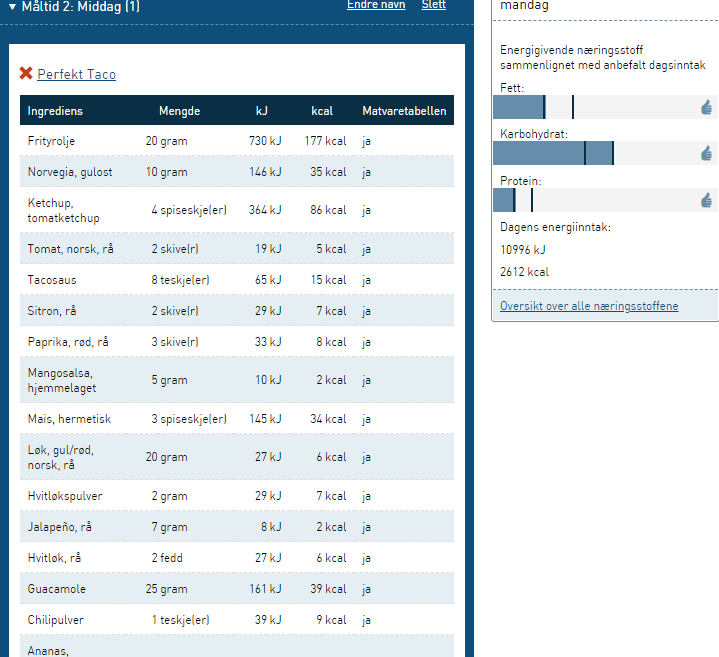
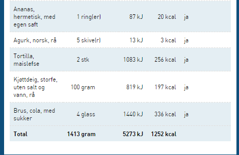
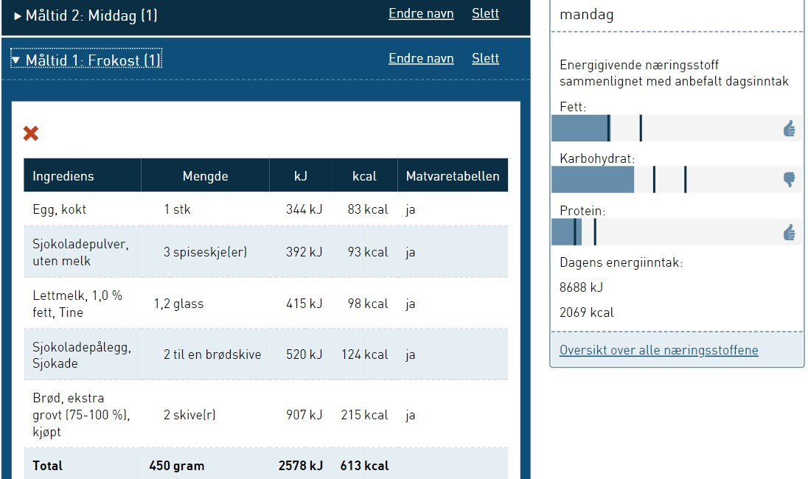

Kostholdsplanleggeren
Jeg har valgt å lage måltider jeg kan spise på fredager. Her er bildene jeg har lagt inn fra kostholdsplanleggeren:

Dette er frokosten jeg har laget.

Dette er kveldsmaten jeg kunne spist i helgene.


Middagen er det måltidet som gir meg mest næring av de jeg har skrevet opp.

Hva kan jeg gjøre for å komme nærmere anbefalingene?
Sånn som det er nå, mangler det vitamin A og D og jeg har for mye vitamin E. Derfor har jeg gjort mange endringer på måltidene,
men jeg greide likevel ikke å få måltidene til å bli nærme nok anbefalingene. Jeg prøvde mye forskjellig,
men det endte alltid opp med å ødelegge for noe annet.
Som man kan se, har det blitt bedre, men ikke veldig bra. Det er veldig vanskelig å få mer vitamin A uten å få mer vitamin E.
Dette er matrettene etter forandringene:

Et egg ble lagt til frokosten, for å få mer vitamin A, fett og proteiner.
Jeg byttet ut kjøttdeigen med laks, for å få mer vitamin A. Så byttet jeg ut frityroljen(stekefett i stekepannen) med Melange,
for å ta bort noe vitamin E. Ketchup, sitron, guacamole, mangosalsa og halvparten av brusen ble tatt bort.
Kveldsmaten ble halvert til en brødsive istedenfor to, fordi det ble for mye karbohydrater. Sjokoladepulveret i melken ble tatt bort,
fordi det inneholder mye sukker. I tillegg tok jeg bort ett glass melk, fordi det ble for mye kalsium.
Kostrådene
- Variert kosthold med mye grønnsaker, frukt og bær, grove kornprodukter og fisk.
- God balanse mellom hvor mye energi man får i seg gjennom mat og drikke, og hvor mye man forbruker gjennom aktivitet.
- Minst fem porsjoner grønnsaker, frukt og bær hver dag.
- Grove kornprodukter hver dag.
- Fisk til middag to til tre ganger i uken.
- Velge magert kjøtt og magre kjøttprodukter. Begrense mengden bearbeidet kjøtt og rødt kjøtt.
- Magre meieriprodukter som del av det daglige kostholdet.
- Bruk matoljer, flytende margarin og myk margarin, fremfor hard margarin og smør.
- Velge matvarer med lite salt, og begrense bruken av salt i matlaging og på maten.
- Unngå mat og drikke med mye sukker i hverdagen.
- Drikk vann når du er tørst.
- Fysisk aktivitet i minst 30 minutter hver dag.